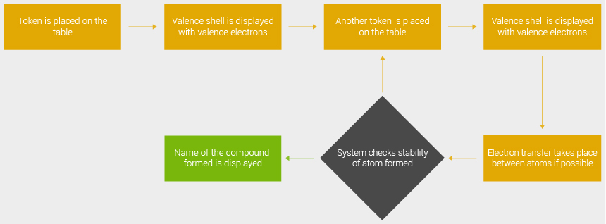

Project Duration: January'13 - April '13
Publication: Mehul Agrawal, Minal Jain, Vikas Luthra, Ashok Thariyan. & Keyur Sorathia. “ChemicAble: Tangible Interaction Approach for learning Chemical Bonding”, in the proceedings of 11th Asia Pacific Conference on Computer Human Interaction, Bangalore, India, 2013.
Prototype Video: http://www.youtube.com/watch?v=sP-0YfFJaso
Prototype Code: https://github.com/Mehulagr/ChemicAble
ChemicAble
Tangible Interaction Approach for Teaching Chemical Bonding
Brief
ChemicAble is an interactive tabletop interface that helps students of grade 8-10 understand ionic compound formation. It acts as an exercise tool for students to understand better the concepts of ionic bonding by letting them explore and learn. It has first 20 elements of the periodic table being represented by 20 hemispherical tokens (atoms). Lewis dot structure which is being taught in these classes, formed the basis of our instructional content for the prototype.
Secondary Study
We studied the papers about tangible interface in education to gather how and what kind of interfaces have been used. Another area that we focused on was use of tangible interface chemistry education specifically to know what all concepts have been taught using tangible tools. Simultaneously we went over through chemistry book of grade 8-10 students. The instructional content was take from ncert books for prototype.
Prototype
The prototype was developed using processing and rear-di like setup. And the development was done with help of processing using TUIO library.
 Following were a few considerations while designing the system –
Following were a few considerations while designing the system –
Designed for the Indian students.
Learning is aimed through exploration, trials and failure.
Learning is enhanced by collaboration.
Users proceed through small steps with appropriate feedback.
Working of Prototype
When atoms are placed on the table, their outermost shell is displayed with the valence electrons. Placing any subsequent atom on the table will result in transfer of electrons between them if possible. Children play around with the tokens to arrive at the correct and stable compound and thus learn by exploration, trials and failures which is one of the most effective and fun ways to understand new concepts and to foster the learning process. Appropriate scaffolding is provided at every step to help the children.
Testing
The final prototype was tested with students of Kendriya Vidhyalaya and their feedback was noted. The result showed positive response towards playfulness and as an exercise tool. However, certain shortcomings were also observed which could be used to increase the system usability and effectiveness in future.